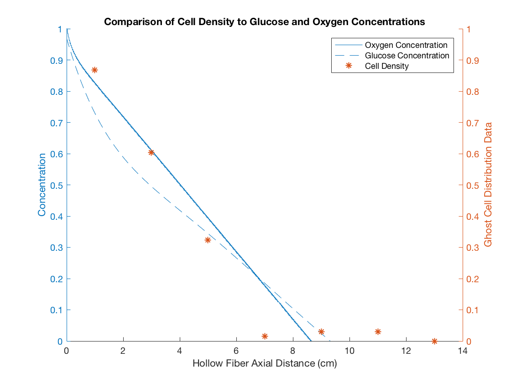

COMSOL Data-Fit Model
BIOE332 - Group Project Hollow Fiber Membrane Bio-reactors
clc, close all % Import Files names = {'std_oxy.txt', 'std_glu.txt'}; figure; hold on for i=1:length(names) filename = sprintf('%s/CSV/%s', pwd, names{i}); M = csvread(filename); yyaxis left ylabel('Concentration') ylim([0,1]) MinConc = [0.2161, 5.3251]; % [Oxy, Glu] LineFtr = {'-', '--'}; Rigged2 = ( M(:,2)-MinConc(i) )./( M(1,2)-MinConc(i) ); % plot(M(:,1), M(:,2)) % plot( M(:,1)./M(end,1), Rigged2 ) if i == 2 % Fit the really choppy Glucose Numerical Data x = M(:,1)/10; P = polyfit(x,Rigged2,6); yfit = P(1)*x.^6+P(2)*x.^5+P(3)*x.^4+P(4)*x.^3+P(5)*x.^2+P(6)*x+P(7); plot(x,yfit, LineFtr{i} ) else plot( M(:,1)/10, Rigged2, LineFtr{i} ) end end % Graph Ghost Cell Data yyaxis right ylabel('Ghost Cell Distribution Data') ylim([0,1]) distance = [0 1 3 5 7 9 11 13]; cells = [86 77 59 40 19 20 20 18]; Rigged1 = ( cells-cells(end) )./( cells(1)-cells(end) ); % scatter(distance(2:end)./distance(end), Rigged1(2:end), '*') scatter(distance(2:end), Rigged1(2:end), '*') legend({'Oxygen Concentration', 'Glucose Concentration', 'Cell Density'}) title('Comparison of Cell Density to Glucose and Oxygen Concentrations') xlabel('Hollow Fiber Axial Distance (cm)') hold off